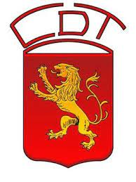
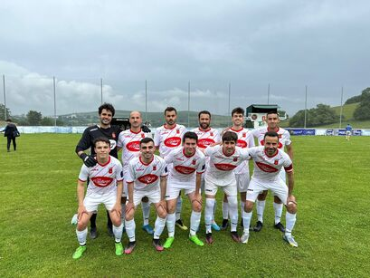

Club Deportivo Tineo
Una de mis principales aficiones de toda la vida es el fútbol. Desde pequeño he jugado en el Club Deportivo Tineo. Allí aprendí todo lo relacionado con la forma de jugar y conocí a mis actuales amigos.
Esta época de mi vida abarca desde los 5 años años de adad a los 19, es decir, he jugado en todas las categorías inferiores del equipo.
Uno de los grandes éxitos conseguidos en esta etapa ha sido el ascenso a primera infantil con 14 años de edad. Sin embargo, en la temporada siguiente el nivel de los demás equipos era tan superior que bajamos a segunda con solo 14 puntos.
Al acabar la etapa de juvenil con 19 años, comienzo a jugar en el primer equipo del Tineo en la categoría de Regional Preferente. Actualmente continúo en el equipo disfrutando de jugar con gente que lleva incluso 18 años en esta categoría.
En resumen, el fútbol a estado presente en la mayor parte de mi vida. Me ha ayudado a trabajar en equipo, a entender a los compañeros y a ser un poco más competitivo en las ocasiones que lo merecen.